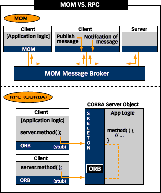

| Reference | Help | Introduction | Slide Show | Class Hierarchy | InterClient | ||
| PREV | NEXT | FRAMES | NO FRAMES | ||
From Java World, May 1998, "Write your own MOM"

RPCs - language call model, blocks
MOMs - event model, non-blocking
All RPCs are based on the concept of using remote procedure calls or methods as though they were local. So if a client wants to send a request for service to a remote machine, the client simply invokes a method.
RPCs include RMI and CORBA as well as your traditional non-object oriented RPCs. CORBA provides a language independent RPC as well as other services.
Message-oriented middleware doesn't model network requests on method calls. Rather, messages are sent and received in an event model. So under the RPC model, a client invokes a remote method and waits for it to return. But under a MOM (Message Oriented Middleware), a client sends a message and is then free to do as it wills asynchronously. This accomodates pipelining, and asynchronous event handling. Message passing is non-blocking.
Most distributed drivers are message oriented, eg. the datagateway broker, and interclient/interserver, but there is at least one jdbc driver i'm aware of that uses RPCs, it's called RmiJdbc. A DBMS message-based communication protocol is proprietary, and allows for efficient row prefetching, blob streaming, etc... that would not be possible using synchronous RPCs.
MOMs are becoming very popular in Java because of their flexibility and performance. JavaSoft has recently released for public review an enterprise api for message based middleware known as JMS (Java Messaging Service).
RPCs have the advantage of ease of use; modelling requests as method invocations gives good programming language integration. But often the setup requirements for ORBs and other RPC based systems is extensive.
| Reference | Help | Introduction | Slide Show | Class Hierarchy | InterClient | ||
| PREV | NEXT | FRAMES | NO FRAMES | ||